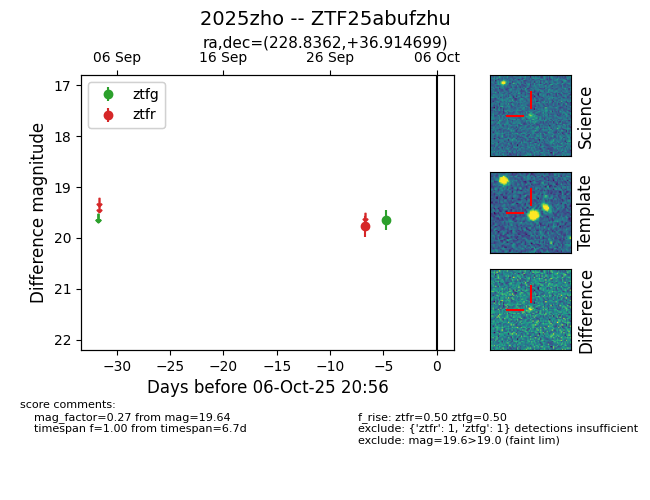

FINK: ZTF25abufzhu
Lasair: ZTF25abufzhu
ALeRCE: ZTF25abufzhu
TNS: 2025zho
YSE: 2025zho
ZTF25abufzhu (ztf,fink)
2025zho (tns,yse)
equatorial (ra, dec) = (228.8362,+36.91470)
galactic (l, b) = (59.9511,+58.18121)

last ztfg=19.64, ztfr=19.77
1 ztfg, 1 ztfr detections